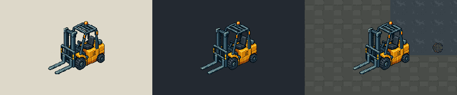

Unaccepted visual candidate. This study checks the existing 96×96 export against a light matte, a dark matte, and a crop of the current Freight Yard render. It does not change the source artwork or the map.

Left to right: light matte, dark matte, existing Freight Yard ground render. Each forklift is drawn at 96×96 source pixels with nearest-neighbor sampling.
Review measurements
Native export: 96×96 px, corresponding visually to 3×3 cells on the map's 32 px grid.
Visible alpha: median 253; 4,290/4,643 (92.4%) pixels have alpha ≥240.
At this scale, the fork, mast, canopy, body, and wheels remain distinguishable on all three shown backgrounds. The yellow body reads strongly against the sampled yard ground; no obvious alpha fringe is visible in this bounded comparison.
Proposed map authoring anchor
Freight Yard west half of the paved slab: tile anchor (28,29), world pixel anchor (912,928), sprite pivot (48,93). This gives a sprite top-left of (864,835) and an approximate visual footprint of 3×3 cells from tile (27,26). The sample leaves the marked Gate B approach clear in the current layout crop.
The anchor, footprint, and placement are proposals only. They do not define collision, prove clearance against every route/use case, or authorize runtime integration. See art/environment/escape_loading_landmark_v1/authoring.json and its README for provenance and limits.